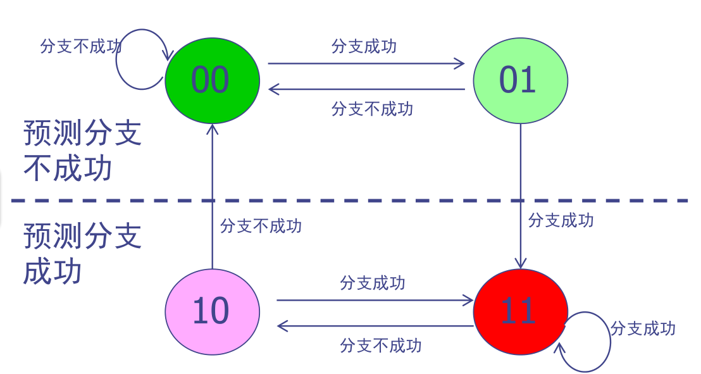
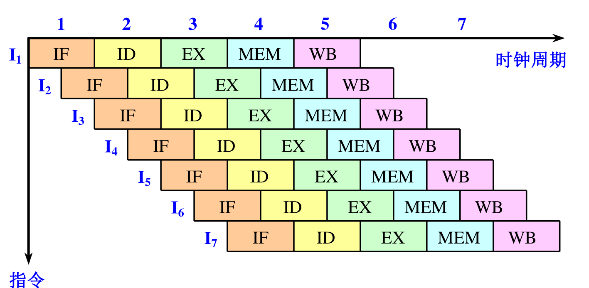
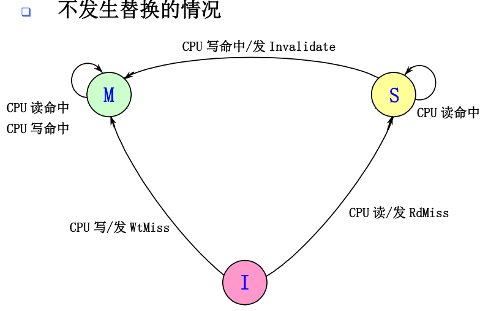
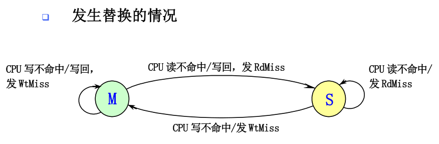
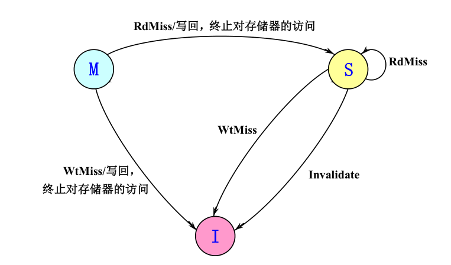
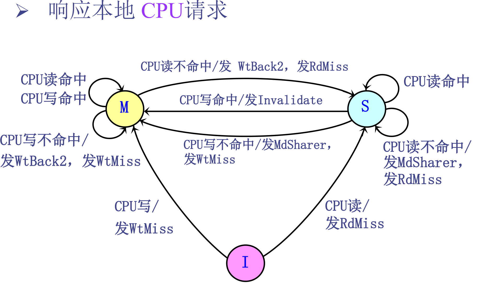
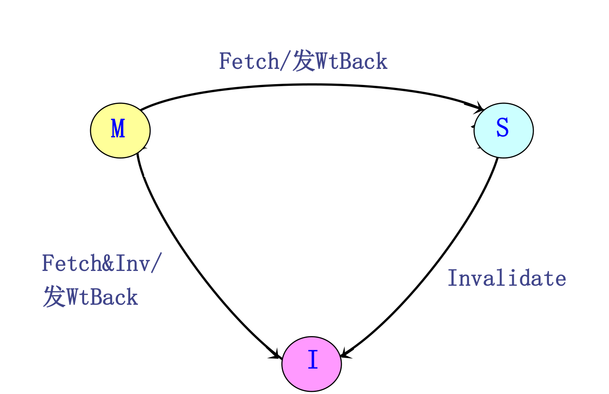
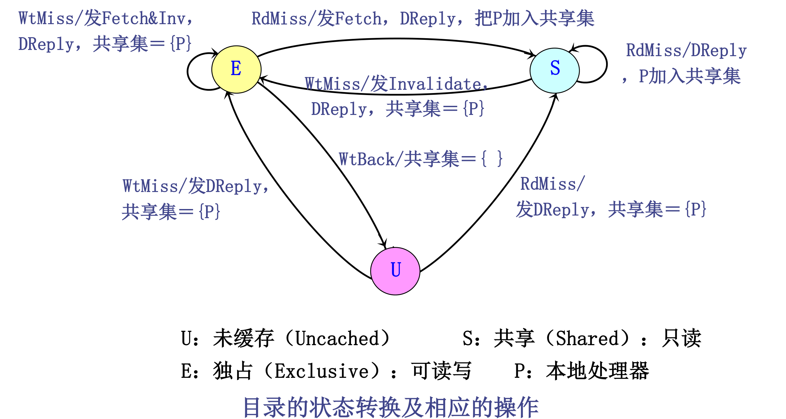

1 基础知识
-
SISD 单指令流单数据流 I = Instruction D = Data，SIMD,MISD（实际不存在）,MIMD同理
-
大概率事件优先的原则：对于大概率事件（最常见的事件），赋予它优先的处理权和资源使用权，以获得全局的最优结果。
-
Amdahl定律：加快某部件执行速度所获得的系统性能加速比，受限于该部件在系统中所占的重要性
-
程序局部性原理：程序在执行时所访问地址的分布不是随机的，而是相对地簇聚；这种簇聚包括指令和数据两部分。包括时间局部性和空间局部性
-
Amdahl定律:系统中某一部件由于采用某种更快的执行方式后整个系统性能的提高与这种执行方式的使用频率或占总执行时间的比例有关
-
MIPS的三个缺陷： a) MIPS依赖于指令集，所以用它来比较指令集不同的机器的性能好坏是不准确的。 b) 在同一台机器上，它因程序不同而变化。 c) 它可能与性能相反。如具有可选硬件浮点运算部件的机器。
-
指令内部并行：单条指令中各微操作之间的并行。 指令级并行：并行执行两条或两条以上的指令。 线程级并行：并行执行两个或两个以上的线程。通常是以一个进程内派生的多个线程为调度单位。 任务级或过程级并行：并行执行两个或两个以上的过程或任务以子程序或进程为调度单元。 作业或程序级并行：并行执行两个或两个以上的作业或程序。
-
时间重叠:引入时间因素，让多个处理过程在时间上相互错开，轮流重叠地使用同一套硬件设备的各个部分，以加快硬件周转而赢得速度。 资源重复:引入空间因素，以数量取胜。通过重复设置硬件资源，大幅度地提高计算机系统的性能。 资源共享:这是一种软件方法，它使多个任务按一定时间顺序轮流使用同一套硬件设备。
2 流水线
- 时空图示例：

-
流水寄存器：在相邻的两段之间传送数据，以提供后面要用到的信息，并把各段的处理工作相互隔离
-
静态流水线：在同一时间内，多功能流水线中的各段只能按同一种功能的连接方式工作。 动态流水线：在同一时间内，多功能流水线中的各段可以按照不同的方式连接，同时执行多种功能。
-
各段时间相等TP
-
各段时间不等TP
-
加速比
-
效率
-
效率不高的原因： ➢多功能流水线在做某一种运算时，总有一些段是空闲的 ➢ 静态流水线在进行功能切换时，要等前一种运算全部流出流水线后才能进行后面的运算 ➢ 运算之间存在关联，后面有些运算用到前面运算的结果 ➢ 流水线的工作过程有建立与排空部分
-
非线性流水线： ➢向一条非线性流水线的输入端连续输入两个任务之间的时间间隔称为非线性流水线的启动距离 ➢ 会引起非线性流水线功能段使用冲突的启动距离则称为禁用启动距离
-
禁用表：

-
状态迁移表：
 ➢根据流水线状态图，由初始状态出发，任何一个闭合回路即为一种调度方案。
➢ 列出所有可能的调度方案，计算出每种方案的平均时间间隔，从中找出其最小者即为最优调度方案。
➢根据流水线状态图，由初始状态出发，任何一个闭合回路即为一种调度方案。
➢ 列出所有可能的调度方案，计算出每种方案的平均时间间隔，从中找出其最小者即为最优调度方案。 -
数据冲突： ❑反相关：如果指令j写的名与指令i读的名相同，则称指令i和j发生了反相关 ❑输出相关：如果指令j和指令i写相同的名，则称指令i和j发生了输出相关
-
结构冲突： 比如，有些流水线处理机只有一个存储器，将数据和指令放在一起，访存指令会导致访存冲突。 ❑解决方法1：设置相互独立的指令存储器和数据存储器或设置相互独立的指令Cache和数据Cache。 ❑解决办法2：插入暂停周期
-
重定向： ❑关键思想：在计算结果尚未出来之前，后面等待使用该结果的指令并不真正立即需要该计算结果，如果能够将该计算结果从其产生的地方直接送到其它指令需要它的地方，那么就可以避免停顿。但Load/Use不能减少。
-
分支冲突： ❑分支成功：PC值改变为分支转移的目标地址在条件判定和转移地址计算都完成后，才改变PC值 ❑分支失败：PC的值保持正常递增，指向顺序的下一条指令
-
分支冲突解决方案： 预测分支失败 预测分支成功 （隐藏）分支延迟
5 指令级并行
-
动态分支预测表BHT预测2位状态转化表：

-
动态分支目标缓冲器BTB： 将分支成功的分支指令地址和它的分支目标地址都放到一个缓冲区中保存起来，缓冲区以分支指令的地址作为标识，效果:

-
多流出处理机方式：
➢ 超标量（Superscalar） 在每个时钟周期流出的指令条数不固定，依代码的具体情况而定，设上限为n，就称该处理机为n-流出可以通过编译器进行静态调度，也可以使用硬件动态调度 ➢ 超长指令字VLIW（Very Long Instruction Word） 在每个时钟周期流出的指令条数是固定的，这些指令构成一条长指令或者一个指令包指令包中，指令之间的并行性是通过指令显式地表示出来的
-
VLIW存在的一些问题: ➢ 程序代码长度增加了: ❑提高并行性而进行的大量的循环展开； ❑指令字中的操作槽并非总能填满。 解决：采用指令共享立即数字段的方法，或者采用指令压缩存储、调入Cache或译码时展开的方法。 ➢ 采用了锁步机制:任何一个操作部件出现停顿时，整个处理机都要停顿。 ➢ 机器代码的不兼容性
-
超流水线处理机： 将每个流水段进一步细分，这样在一个时钟周期内能够分时流出多条指令。这种处理机称为超流水线处理机对于一台每个时钟周期能流出n条指令的超流水线计算机来说，这n条指令不是同时流出的，而是每隔1/n个时 钟周期流出一条指令 ➢ 实际上该超流水线计算机的流水线周期为1/n个时钟周期

7 存储系统
-
全相联映像：主存中的任一块可以被放置到Cache中的任意一个位置 特点：空间利用率最高，冲突概率最低，实现最复杂，查找速度慢
-
直接映像：主存中的每一块只能被放置到Cache中唯一的一个位置 特点：空间利用率最低，冲突概率最高，实现最简单，查找速度最快
-
组相联映像：主存中的每一块可以被放置到Cache中唯一的一个组中的任何一个位置。
-
主存块的块地址的高位部分，称为标识 （Tag） ❑每个主存块能唯一地由其标识来确定
-
目录由2g个相联存储区构成，每个相联存储区的大小为n×（h+log2n）位 ❑根据所查找到的组内块地址，从Cache存储体中读出的多个信息字中选一个，发送给CPU
-
替换方法： ❑随机法 优点：实现简单 ❑先进先出法FIFO ❑最近最少使用法LRU：选择近期最少被访问的块作为被替换的块 特点：不命中率低和实现简单 对于容量很大的Cache，LRU和随机法的命中率差别不大
-
写入策略 ➢写直达法（也称为存直达法、写穿，write through） ❑执行“写”操作时，不仅写入Cache，而且也写入下一级存储器 ❑易于实现，一致性好 ➢ 写回法（也称为拷回法，write back） ❑执行“写”操作时，只写入Cache,仅当Cache中相应的块被替换时，才写回主存 ❑速度快，所使用的存储器带宽较低
-
调块策略： ➢按写分配(写时取)：写不命中时，先把所写单元所在的块调入Cache，再行写入 ➢ 不按写分配(绕写法)：写不命中时，直接写入下一级存储器而不调块
-
Cache性能指标： 不命中率： 与硬件速度无关，容易产生一些误导 平均访存时间：平均访存时间 ＝ 命中时间＋不命中率×不命中开销
-
带Cache的CPU时间：
-
改进Cache： ➢ 降低不命中率 ➢ 减少不命中开销 ➢ 减少Cache命中时间
-
不命中类型： ➢强制性不命中(Compulsory miss) ❑当第一次访问一个块时，该块不在Cache中，需从下一级存储器中调入Cache，这就是强制性不命中 (冷启动不命中，首次访问不命中） ➢ 容量不命中(Capacity miss ) ❑如果程序执行时所需的块不能全部调入Cache中，则当某些块被替换后，若又重新被访问，就会发生不命中。这种不命中称为容量不命中 ➢ 冲突不命中(Conflict miss) ❑在组相联或直接映象Cache中，若太多的块映象到同一组(块)中，则会出现该组中某个块被别的块替换(即使别的组或块有空闲位置)，然后又被重新访问的情况。称为冲突不命中(碰撞不命中，干扰不命中)
-
冲突和相联度的关系： ➢相联度越高，冲突不命中就越少 ➢强制性不命中和容量不命中不受相联度的影响 ➢强制性不命中不受Cache容量的影响 ➢容量不命中随着容量的增加而减少
-
减少三种不命中的方法： ❑强制性不命中：增加块大小，预取（本身很少） ❑容量不命中：增加容量（成本、抖动现象） ❑冲突不命中：提高相联度（理想情况：全相联）
-
不命中率与块大小的关系： ➢ 对于给定的Cache容量，当块大小增加时，不命中率开始是下降，后来反而上升了。原因： ❑ 一方面它减少了强制性不命中 ❑ 另一方面，由于增加块大小会减少Cache中块的数目，所以有可能会增加冲突不命中 ➢ Cache容量越大，使不命中率达到最低的块大小就越大 增加块大小：增加冲突，增加不命中开销
-
提高相联度： 采用相联度超过16的方案的实际意义不大，容量为N的直接映象，Cache的不命中率和容量为N/2的两路组相联Cache的不命中率差不多相同。提高相联度是以增加命中时间为代价
-
伪相联：在逻辑上把直接映象Cache的空间上下平分为两个区。对于任何一次访问，伪相联Cache先按直接映象Cache的方式去处理。若命中，则其访问过程与直接映象Cache的情况一样。若不命中，则再到另一区相应的位置去查找。若找到，则发生了伪命中，否则就只好访问下一级存储器。
-
多级Cache:
8 输入输出系统
-
反映外设可靠性能的参数有： ❑ 可靠性（Reliability） ❑ 可用性（Availability） ❑ 可信性（Dependability）
-
系统的可靠性：系统从某个初始参考点开始一直连续提供服务的能力。 ❑ 用平均无故障时间MTTF来衡量 ❑ MTTF的倒数就是系统的失效率 ❑ 如果系统中每个模块的生存期服从指数分布，则系统整体的失效率是各部件的失效率之和(串联模型下) ❑ 系统中断服务的时间用平均修复时间MTTR来衡量
-
可靠度R(t)，不可靠度F(t)：
-
磁盘阵列DA：使用多个磁盘（包括驱动器）的组合来代替一个大容量的磁盘 ❑ 多个磁盘并行工作 ❑ 以条带为单位把数据均匀地分布到多个磁盘上（交叉存放） ❑ 条带存放可以使多个数据读/写请求并行地被处理，从而提高总的I/O性能： ❑ 多个独立的请求可以由多个盘来并行地处理减少了I/O请求的排队等待时间 ❑ 如果一个请求访问多个块，就可以由多个盘合作来并行处理提高了单个请求的数据传输率
-
磁盘阵列粒度： ❑ 细粒度磁盘阵列是在概念上把数据分割成相对较小的单位交叉存放 ❑ 优点：所有I/O请求都能够获得很高的数据传输率 ❑ 缺点：在任何时间，都只有一个逻辑上的I/O在处理当中，而且所有的磁盘都会因为为每个请求进行定位而浪费时间 ❑ 粗粒度磁盘阵列是把数据以相对较大的单位交叉存放 ❑ 优点：多个较小规模的请求可以同时得到处理，对于较大规模的请求又能获得较高的传输率
-
RAID级别
| RAID级别 | 可容忍故障数，数据盘为8时检测盘数 | 做法 | 优点 | 缺点 |
|---|---|---|---|---|
| 0 非冗余，条带存放 | 0，0 | 无冗余信息 | 没有空间开销 | 没有纠错能力 |
| 1 镜像 | 1，8 | 对所有的磁盘数据提供一份冗余的备份 | 不需要计算奇偶校验，数据恢复快，读数据快。小规模写操作比更高级别的RAID快 | 成本最大 |
| 2 存储器式ECC | 1，4 | 按汉明纠错码的思路构建 | 不依靠故障盘进行自诊断 | 检测空间开销的级别是 log2(m)级 |
| 3 位交叉奇偶校验 | 1，4 | 粒度小，可以是1个字节或者1位 | 检测空间开销小，大规模读写操作的带宽高 | 对小规模、随机的读写操作没有提供特别的支持 |
| 4 块交叉奇偶校验 | 1，1 | 粒度大 | 检测空间开销小，小规模的读操作带宽更高 | 校验盘是小规模写的瓶颈 |
| 5 块交叉分布奇偶校验 | 1，1 | 数据以块交叉的方式存于各盘，奇偶校验信息均匀分布在所有磁盘上 | 检测空间开销小，小规模的读写操作带宽更高 | 小规模写操作需要访问磁盘4次 |
| 6 P+Q双奇偶校验 | 2，2 | 具有容忍2个故障的能力 | 小规模写操作需要访问磁盘6次，检测空间开销加倍（与RAID3、4、5比较） | |
| 10 镜像+条带 | ||||
| 01 条带+镜像 |
-
RAID5初始化：为保证校验信息一致正确，全部写“0”，计算校验
-
分离事务总线（又称：流水总线、悬挂总线、包交换总线） ❑ 在有多个主设备时，可以通过包交换来提高总线带宽 ❑ 基本思想：将总线事务分成请求和应答两部分，在请求和应答之间的空闲时间内，总线可以供其它的I/O使用，这样就不必在整个I/O过程中都独占总线
-
同步总线 ❑ 同步总线的控制线中包含一个时钟，总线上所有设备的所有的通信操作都以该时钟为基准 ❑ 优点：速度快、成本低 ❑ 缺点：由于时钟通过长距离传输后会扭曲，因而同步总线不能用于长距离的连接。特别是对于高速同步总线来说，更是如此。总线上的所有设备都必须以同样的时钟频率工作
-
异步总线 ❑ 没有统一的参考时钟，每个设备都有各自的定时方法，采用握手协议 ❑ 不存在时钟扭曲和同步的问题，传输距离可以比、较长 ❑ 很多I/O总线都采用异步总线 ❑ 同步总线通常比异步总线快
-
I/O设备编址：
-
CPU对I/O设备的编址有两种方式 ❑ 存储器映射I/O（也称为I/O设备统一编址） 将一部分存储器地址空间分配给I/O设备，用load指令和store指令对这些地址进行读写将引起I/O设备的数据传输，将一部分存储空间留出用于设备控制，对这一部分地址空间进行读写就是向设备发出控制命令 ❑ 给I/O设备独立编址 需要在CPU中设置专用的I/O指令来访问I/O设备CPU需要发出一个标志信号来表示所访问的地址是I/O设备的地址
-
CPU与外部设备进行输入/输出的方式可分为4种 ❑ 程序查询 ❑ 中断 ❑ DMA ❑ 通道
-
DMA传输中如果使用物理地址，对于超出一页的数据缓冲区的地址在物理存储器中不一定连续，以及操作中OS移出页面，会导致DMA传输错误。所以DMA要么： ❑ 使操作系统在I/O的传输过程中确保DMA设备所访问的页面都位于物理存储器中，这些页面被称为是钉在了主存中 ❑ “虚拟DMA”技术 允许DMA设备直接使用虚拟地址，并在DMA期间由硬件将虚拟地址转换为物理地址。在采用虚拟DMA的情况下，如果进程在内存中被移动，操作系统应该能够及时地修改相应的DMA地址表
-
CPU和I/O不一致：由于二者优先放的内容不同，可能会导致数据不一致
CPU ←→ Cache ↓ 主存 ←→ I/O设备为了解决这个问题： ❑从软件上可以让I/O缓冲区内的块不在Cache中，可以通过标记块无法进入Cache或者使Cache中的对应块无效化完成。 ❑硬件上可以检测地址重复使Cache中的块无效化。 ❑最好不要将I/O直接连接到Cache上，会导致竞争问题，以及破坏CPU访问块的问题。
9 互联网络
-
互连网络的主要特性参数有： ❑ 网络规模N：网络中结点的个数。 表示该网络所能连接的部件的数量。 ❑ 结点度d：与结点相连接的边数（通道数），包括入度和出度。进入结点的边数叫入度。从结点出来的边数叫出度。 ❑ 结点距离：对于网络中的任意两个结点，从一个结点出发到另一个结点终止所需要跨越的边数的最小值。 ❑ 网络直径D：网络中任意两个结点之间距离的最大值。网络直径应当尽可能地小。 ❑ 等分宽度b：把由N个结点构成的网络切成结点数相同（N/2）的两半，在各种切法中，沿切口边数的最小值。
-
循环移数网络： 通过在环上每个结点到所有与其距离为2的整数幂的结点之间都增加一条附加链而构成。 一般地，如果｜j-i｜=2^r（r=0,1,2,…,n-1，n=log2N），则结点i与结点j连接。 ❑ 结点度：2n－1 直径：n/2 网络规模N=2n
-
网格网络： 一个由N=nk 个结点构成的k维网格形网络（每维n个结点）的内部结点度d=2k，网络直径D=k(n-1)
-
Illiac网络：把2维网格形网络的每一列的两个端结点连接起来，再把每一行的尾结点与下一行的头结点连接起来，并把最后一行的尾结点与第一行的头结点连接起来 ❑ 结点度d=4 网络直径D=n-1 等分宽度：2n
-
环网形：可看作是直径更短的另一种网格。把2维网格形网络的每一行的两个端结点连接起来，把每一列的两个端结点也连接起来 ❑ 结点度：4 网络直径：2× ⌊n/2 ⌋ 等分宽度b=2n
-
互联函数：
-
单极立方体网：该网络由立方体函数定义，立方体函数族有n个成员：
最坏情况下的传输需对输入结点编号的全部n位取反，所以单级立方体网络直径是n。成本N·log2N。
-
单级混洗-交换网：该网络由混洗函数（shuffle）与交换函数（Cube0）定义，单一shuffle不能满足图联通，所以需要Cube0作为补充
单级混洗—交换网络的直径是2n-1。成本=N·2
-
单级加减2i网：该网络由PM2I函数定义，PM2I函数共有n对成员 ❑ 性质1：对相同的i值，PM2+i与PM2-i函数的传送路径相同，方向相反 ❑ 性质2：PM2+(n-1) = PM2-(n-1)。 根据性质2，我们知道单级PM2I网络实际上只能实现2n-1种不同的置换。 单级PM2I网络的直径是 n/2(向上取整），成本=N(2·log2N –1)
-
寻路算法： ❑ 单级立方体网：异或，根据结果找路径，顺序随意 ❑ 单级混洗-交换网：如果yi⊕xi=“1”，表明xi须先经n-i步shuffle到最低位，1步Cube0求反，再经i步shuffle回到原位变成yi。如有多位“1”，可以合并shuffle，具体算法须灵活设计
-
多级互联网络：一种通用的多级互连网络，由a×b开关模块和级间连接构成的通用多级互连网络结构，每一级都用了多个a×b开关，a个输入和b个输出。在理论上，a和b不一定相等，然而实际上a和b经常选为2的整数幂，即a＝b＝2k，k≥1。相邻各级开关之间都有固定的级间连接。多级立方体网和多级混洗—交换网不使用单级互连网中的那种多路选择开关，而是用一种2输入/2输出的二元交换开关，以减少开关总数。二元交换开关 基本接通状态有“直连“00 11、“交换”01 10、“上播”00 01和“下播”10 11，进行数据置换时只能使用前2种。
-
多级混洗—交换网络（Omega网），级内采用混洗-交换，级内使用n/2个2×2开关，级间采用均匀洗牌
10 多处理机
-
MIMD机器分为两类： ❑ 集中式共享存储器结构：最多由几十个处理器构成。各处理器共享集中式物理存储器。这类机器有时被称为SMP，UMA。 ❑ 分布式存储器多处理机：存储器在物理上是分布的。 支持较大规模多处理机系统，每个结点包含：处理器、CACHE、存储器、I／O互连网络接口，在许多情况下，分布式存储器结构优于集中式共享存储器结构。优点是： ❑ 将存储器分布到各结点有两个优点如果大多数的访问是针对本结点的局部存储器，则可降低对存储器和互连网络的带宽要求； ❑ 对本地存储器的访问延迟时间小。
-
从地址上，可以再细分为： ❑ 共享地址空间：物理上分离的所有存储器作为一个统一的共享逻辑空间进行编址。称为分布式共享存储器系统或NUMA机 ❑ 共享地址空间：每个结点中的存储器编址为一个独立地址空间，不同结点中的地址空间是相互独立的。存储器只能由本地处理器访问，远程处理器不能直接对其进行访问
-
通信机制分为： ❑ 共享存储器通信机制 共享地址空间的计算机系统采用，处理器间通过load/store指令对相同存储器地址读/写来实现，优点： ❑ 常用对称式多处理机的通信机制兼容。 ❑ 易于编程，在简化编译器设计方面有优势。 ❑ 采用大家熟悉的共享存储器模型开发应用程序，把重点放到解决对性能影响较大的数据访问上。 ❑ 通信数据量较小时，通信开销较低，带宽利用较好。 ❑ 可通过Cache技术减少远程通信频度，减少通信延迟以及对共享数据访问冲突。 ❑ 消息传递通信机制 多个独立地址空间的计算机采用，处理器间显式地传递消息来完成消息传递，这些消息请求进行某些操作或者传送数据。优点是： ❑ 硬件较简单。 ❑ 显式通信，更易搞清何时发生通信以及通信开销是多少。 ❑ 显式通信可让编程者重点注意并行计算的主要通信开销，使之有可能开发出结构更好、性能更高的并行程序。 ❑ 同步很自然地与发送消息相关联，能减少不当同步带来错误的可能性。
-
Cache一致性跟踪协议： ❑ 监听式协议（snooping）：每个Cache除了包含物理存储器中块的数据拷贝外，也保存着各块的共享状态信息。所有Cache都可通过某种广播介质访问，所有Cache控制器监听总线来判断它们是否有总线上请求的数据块。 ❑ 目录式协议（directory）：物理存储器中数据块的共享状态被保存在一个称为目录的地方。开销稍大于前者，但可用于实现更大规模的多处理机。
-
实际做法： ❑ 写作废协议：在处理器对某数据项写入之前，保证它拥有对该数据项的唯一访问权。(作废其它的副本) ❑ 在对同一个数据进行多次写操作而中间无读操作时，写更新协议需多次写广播操作，而写作废协议只需一次作废操作。 ❑ 在对同一Cache块的多个字进行写操作时，写更新协议对于每一个写操作都要进行一次广播，而写作废协议仅在对该块的第一次写时进行作废操作即可。写作废是针对Cache块的，写更新则是针对字（或字节） ❑ 写更新协议：当一个处理器对某数据项进行写入时，通过广播使其它Cache中所有对应于该数据项的副本进行更新。 ❑ 写更新协议的延迟时间较小
10.1 监听协议的实现
实现写作废协议的关键是使用总线执行作废，发送到总线上的消息主要有以下两种：RdMiss——读不命中、WtMiss——写不命中。一般考虑写回法，因为这样的话其他节点想要获取到最新值更容易。
作废一个块只需将其有效位置为无效，并给每个Cache块增设一个共享位，为“1”：该块是被多个处理器所共享，为“0”：仅被某个处理器所独占。
每个数据块的状态取以下3种状态中的一种：
- 无效（简称I）：Cache中该块的内容为无效。
- 共享（简称S）：该块可能处于共 享状态。在多个处理器中都有副本。这些副本都相同，且与存储器中相应的块相同。
- 已修改（简称M）：该块已经被修改过，并且还没写入存储器。
Cache收到本结点CPU的信息转化：


这里的替换是指Cache已满，但不命中的情况。
Cache收到总线上的信息（即别的结点的动作）状态变化：

10.2 目录协议的实现
目录是一种集中的数据结构。对于存储器中的每一个可以调入Cache的数据块，在目录中设置一条目录项，用于记录该块的状态以及哪些Cache中有副本等相关信息。对于任何一个数据块，都可以快速地在唯一的一个位置中找到相关的信息。这使一致性协议避免了广播操作。
可以使用位向量来记录哪些Cache中有副本。每一位对应于一个处理器。长度与处理器的个数成正比。由位向量指定的处理机的集合称为共享集S。
最简单的实现方案：对于存储器中每一块都在目录中设置一项。目录中的信息量与(存储器中存储块的总数量)×(处理器的个数)成正比。而(存储器中存储块的总数量)=（每个处理机中存储块的数量)×(处理器的个数)
存储块的状态有3种：
- 未缓冲：该块尚未被调入Cache。所有处理器的Cache中都没有这个块的副本。
- 共享：该块在一个或多个处理机上有这个块的副本，且这些副本与存储器中的该块相同。
- 独占：仅有一个处理机有这个块的副本，且该处理机已经对其进行了写操作，所以其内容是最新的，而存储器中该块的数据已过时
本地结点发给**宿主结点（有目录的结点）**的信息：
- RdMiss（P，K）：处理机P读取地址为K的数据时不命中，请求宿主结点提供数据（块），并要求把P加入共享集。
- WtMiss（P，K）：处理机P对地址K进行写入时不命中，请求宿主结点提供数据，并使P成为所访问数据块的独占者。
- Invalidate（K）：请求向所有拥有相应数据块副本（包含地址K）的远程Cache发Invalidate消息，作废这些副本
- MdSharer（P，K）：用于当本地Cache中需要替换一个包含地址K的块、且该块未被修改过。这个消息发给该块宿主结点，请求它将P从共享集中删除。如果删除后共享集为空，则宿主结点还要将该块状态改为“未缓存”（U）。
- WtBack2（P，K，D）：用于当本地Cache中需要替换一个包含地址K的块、且该块已被修改过。这个消息发给该块宿主结点，完成两步：①写回该块；②进行与MdSharer相同操作。
宿主节点发给远程结点的信息：
- Invalidate（K）：作废远程Cache中包含地址K的数据块。
- Fetch（K）：从远程Cache中取出包含地址K的数据块，并送到宿主结点。把远程Cache中那个块的状态改为“共享”。
- Fetch&Inv（K）：从远程Cache中取出包含地址K的数据块，并送到宿主结点。然后作废远程Cache中的那个块。
宿主结点发送给本地结点的消息：
- Reply（D）：D表示数据内容。把从宿主存储器获得的数据返回给本地Cache。
远程结点发送给宿主结点的消息
- WtBack（K，D）：把远程Cache中包含地址K的数据块写回到宿主结点中， 该消息是远程结点对宿主结点发来的“取数据”或“取/作废”消息的响应。
目录可能受到以下三种请求：
- 读不命中
- 写不命中
- 数据写回
本地节点状态变化：

远程节点状态变化：

宿主结点目录变化：

目录的三种结构：
- 全映象目录：每一个目录项都包含一个N位（N为处理机的个数）的位向量，其每一位对应于一个处理机。
- 优点：处理比较简单，速度也比较快
- 缺点：
- 存储空间的开销很大。
- 目录项的空间与处理机的个数的平方成正比。
- 可扩放性很差
- 有限映象目录：采用位数固定的目录项目，限制同一数据块在所有Cache中的副本总数，记录具有数据的结点编号
- 缺点：当同一数据的副本个数大于m时，必须做特殊处理。当目录项中的m个指针都已经全被占满，而某处理机又需要新调入该块时，就要进行汰换。
- 链式目录：用一个目录指针链表来表示共享集合。当一个数据块的副本数增加（或减少）时，其指针链表就跟着变长（或变短）
- 优点：既不限制副本的个数，又保持了可扩展性
10.3 同步
单处理机的多进程并发只是宏观的，由于处理机的唯一性，不可能“精确地”在某一时间做同一事情。因为CPU时间片切换的不可预测，需防止某一进程正在处理、尚未完成的共享资源被切换过去的其它进）半途操作，造成双方都不期望结果（如共享打印机）。所以“信号灯”或“锁”的作用是告诉其它进程：“此资源尚在处理中”。
多处理机的多进程并发则是“真实的” ，完全可能“精确地”在某一时刻开始做同一事情，就像多台外设同时申请中断一样。对此，须有专门硬件仲裁与排队同时到达的多个申请，用硬件信号“暂停”未竞争到使用权的处理机
典型的互斥是临界资源的串行使用：每个进程都需要经历测锁→上锁→开锁的过程，共有n次竞争上锁、n次开锁。只需1个锁变量
典型的同步操作是栅栏：栅栏强制所有先到达该栅栏的进程进行等待，直至最后1个进程到达，由它释放全部进程，继续执行
信号灯操作中，需要对Cache做以下处理：
- 读信号灯在当地Cache进行，只要复件有效；
- 写信号灯必须直接作用于主存原件，采用“写直达”策略；
- 写过程有排它性，硬件推迟其它处理机的写请求；
- 写完原件要通知所有其它Cache中的复件作废，即“一写多废”，让其它处理机随后发生“读失效”或“写失效”；
- 信号灯管理系统的时间开销主要来源于“读失效”和“写失效”，或称“总线事务处理”次数；
- 探讨不同的锁管理机制，目的是在程序正确前提下，减少时间开销
对于硬件源于，有以下典型操作：
- 原子交换EXCH：将一个存储单元的值和一个寄存器的值进行交换。建立一个锁，锁值0可用，1不可用
- 测试并置定：先测试一个存储单元的值，如果符合条件则修改其值
- 读取并加1：它返回存储单元的值并自动增加该值
- LL：它读取“锁”单元原值到指定寄存器，返回该存储单元初始值
- SC：它首先再读“锁”单元，如果与LL所读相同，则将指定寄存器中的新值送给“锁”单元，返回一个值来指出该指令操作是否成功，1表示成功
- LL/SC指令顺序执行：
- 如果由LL指明的存储单元的内容在SC对其进行写之前已被其它指令改写过，则第二条指令SC执行失败；
- 如果在两条指令间进行切换也会导致SC执行失败。
自旋锁：上锁时，该系统函数循环读取、判断指定的锁变量，直至发现锁被释放，然后上锁，返回用户程序。释放锁的时候，只需简单地将锁置为0
自旋锁的一致性分为有Cache和无Cache，前者的优点是访问速度快，但是需要额外的而方式保证一致性。有Cache情况下，可以让循环读取在Cache中进行，知道缓存作废再去抢，减少争用总线的次数。
简单旋转锁不能很好地适应可缩扩性。大规模多处理机中，若所有的处理器都同时争用同一个锁，则会导致大量的争用和通信开销。存下以下缺点：
- 可能造成等待时间延长，并且存在“不公平”问题。
- 随着处理器个数的不断增加，旋转锁竞争性操作增加了系统负担，从而导致更长的等待时间；
- 一个处理器释放旋转锁时要通知等待中的所有处理器，将Cache复本作废，那么几何距离上邻近它的处理器可能会较先地更新Cache，因而增大获得旋转锁的机率。
- 由于每个申请旋转锁的处理器均在全局变量 slock 上忙等待，系统总线将因为处理器间的Cache同步而导致繁重的流量（即因读失效或写失效引起的Cache调入、调出），从而降低了系统整体的性能